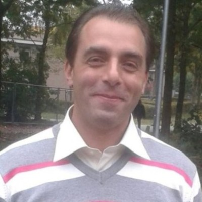

Moulham Al Boushi

Personalia
- E-mail:molhamboshi@gmail.com
- Telefoonnummer: 0681587291
- Rijbewijs:B
- Linkdin
Onderwijs
Elektronische schakelingen en de werking van radio, recorder en televisie
Werkervaring
- jan.2020-heden Medewerker Inktvoorbereiding bij Saica Flex, Etten-Leur
- Voorbereiden en klaarzetten van inkten voor de komende orders.
- Werkzaamheden conform BRC-lop/ISO uitvoeren.
- Naleven van bedrijfs en veiligheidsvoorschri en
- Bestellen van benodigde grondsto en.
- Bijbehorende administratieve taken.
- Realiseren van gevaagde kwaliteit.
- Schoonhouden van je werkplek.
- Verwerken van retourinkten.
- Bijhouden inktvoorraad.
- feb. 2008 - aug. 2015 Hooft technische afdeling bij Tanweer Groep-Damascus
- 2008 -2009 Technisch medewerker.
- 2009 - 2015 Hoofd technische afdeling.
- Rapporten over dagelijks vooruitgang.
- Toevoegen ondertiteling op beeldscherm.
- Monitoren processen om kwaliteit te waarborgen.
- Voorbereiden eindkopie ondertiteling of dubbing voor opdrachtgevers.
- controleren kwaliteit en verzendklaar maken van technische verslagen.
- Communiceren met andere afdelingen ten behoeve van vertalingen DVD's of cd's.
- Onderhouden contacten met alle continenten ten behoeve van uploaden ondertiteling en dubbing.
- feb. 2002 - aug. 2015
Ambtenaar Voorbereiden Drukkerij bij Overheidsinstelling voor publicaties en studieboeken, Damascus
- CTP: Alle taken mbt computer top Plate (CTP) tbv beeldtechnologie.
- Lay-Out: Werk bij afdeling Lay-Out van een drukkerij voor Studieboeken.
- Administratieve: Adviseren/controleren Contact onderhouden met drukkerijen en de Ministerie van onderwijs.
Vaardigheden
Hobby's
- Fotograaf.
- Nieuwe dingen leren.
- Met mensen praten om dingen vanuit
een ander perspectief te zien